Cinnamon
Sobre
Cinnamon é um motor gráfico de jogos 3D desenvolvido em Java utilizando OpenGL, desenvolvido por Meiiraru "Pumpkin" ao longo do curso de Jogos Digitais da Unisinos.
O motor foi projetado para ser altamente modular e customizável, permitindo que os desenvolvedores alterem e expandam as suas funcionalidades de acordo com as necessidades dos seus projetos.
Cinnamon consiste em uma pipeline simples de renderização e física, permitindo a rápida prototipagem de jogos e experiências interativas. Com suporte para uma variedade de recursos gráficos, incluindo renderização de modelos 3D, iluminação dinâmica, efeitos de pós-processamento, integração com realidade virtual e mais.
Screenshots
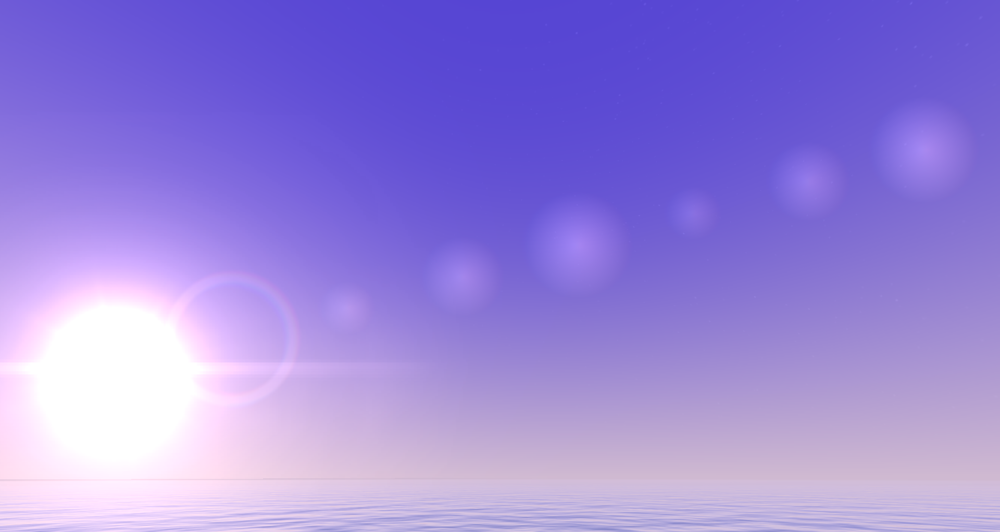
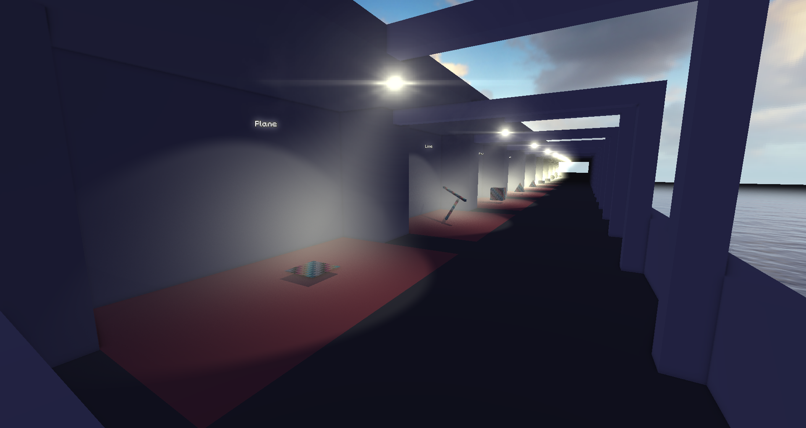
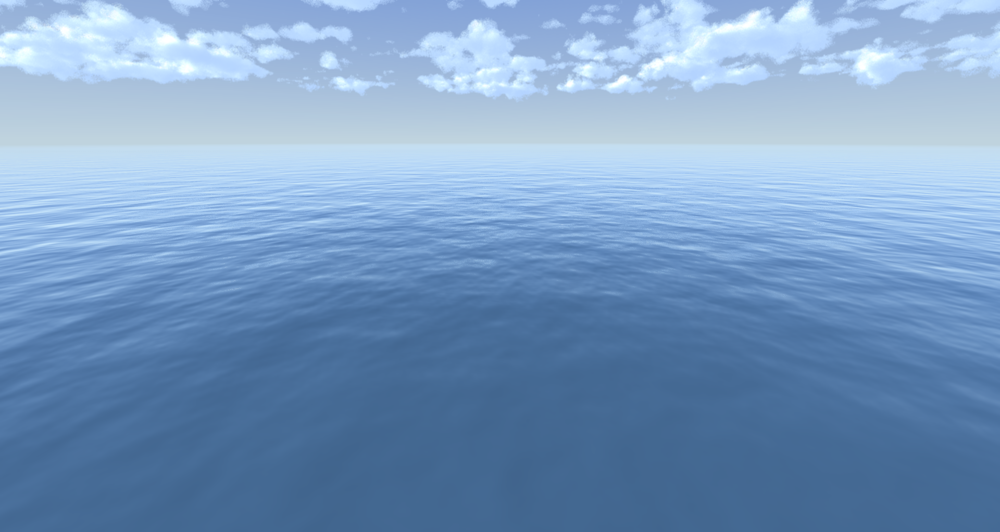
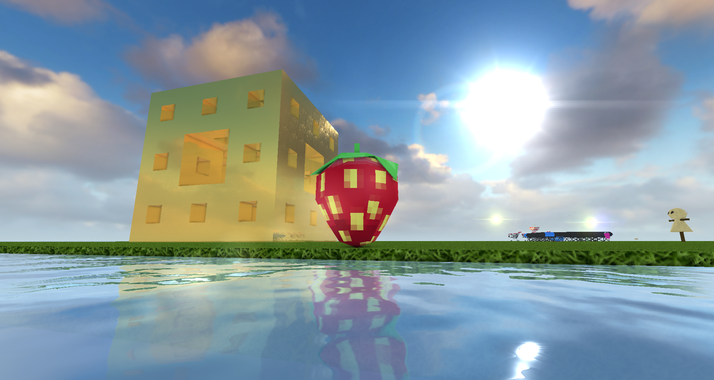
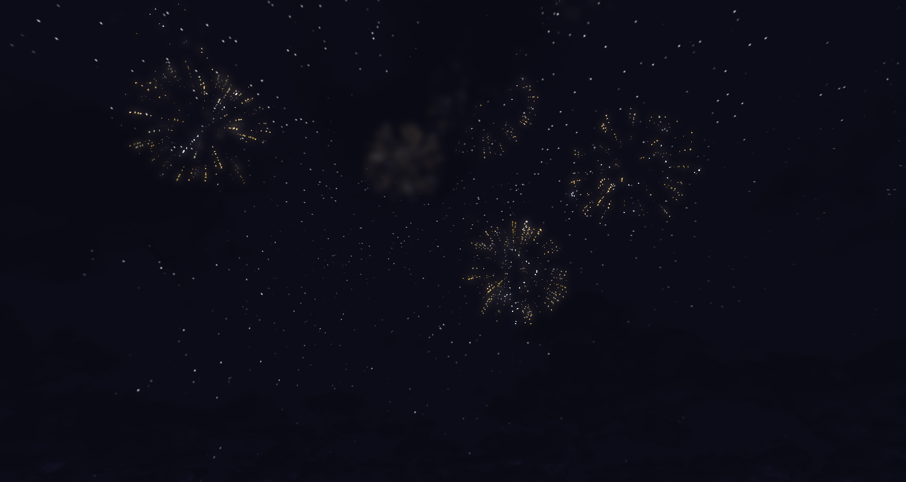
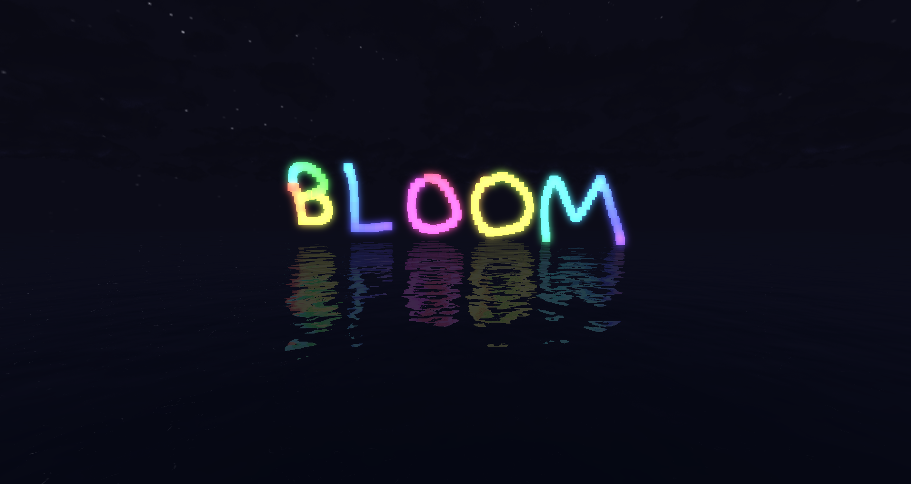
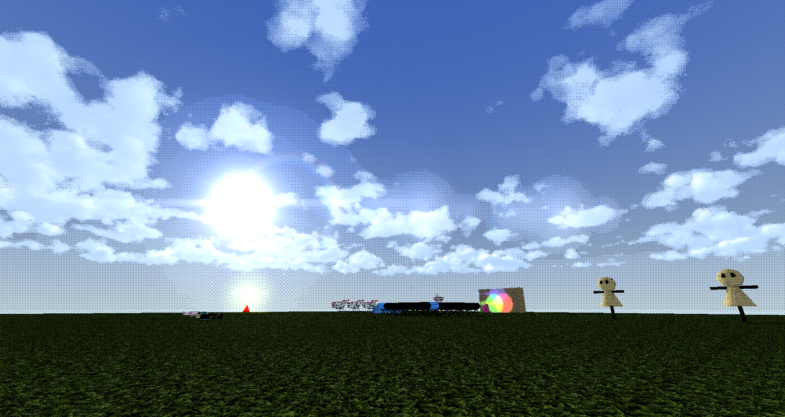
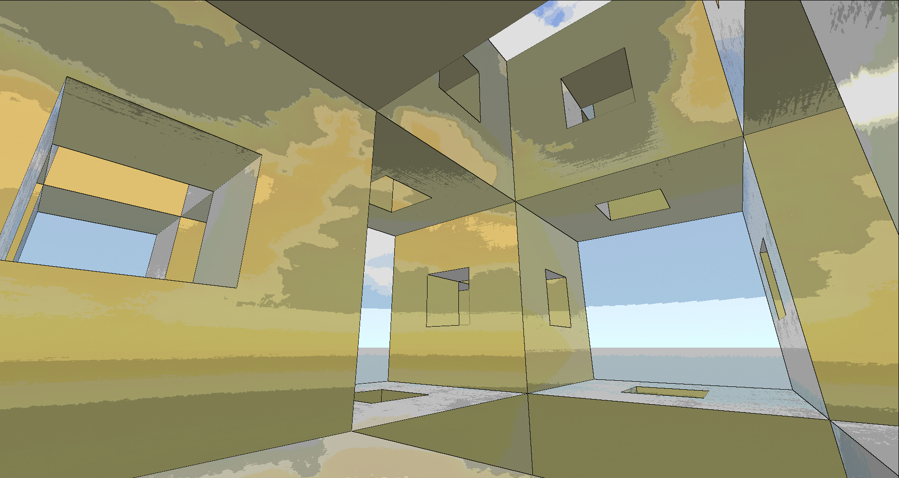
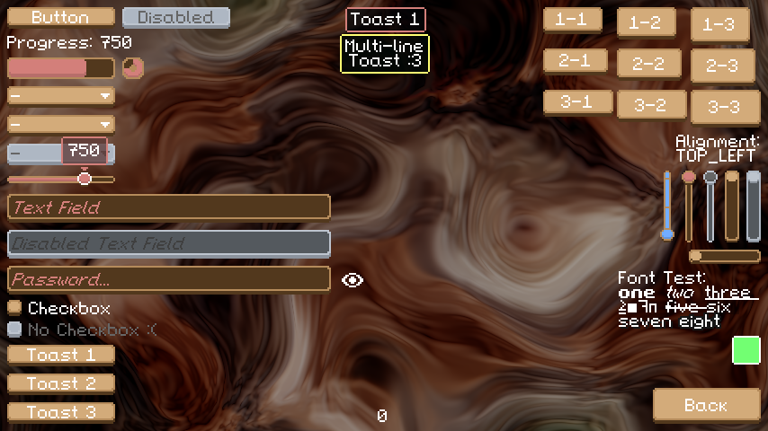
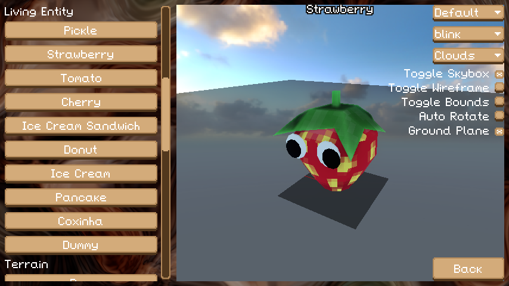
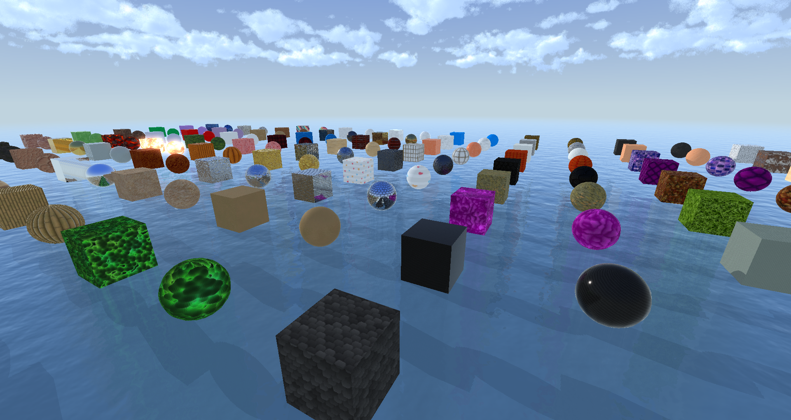